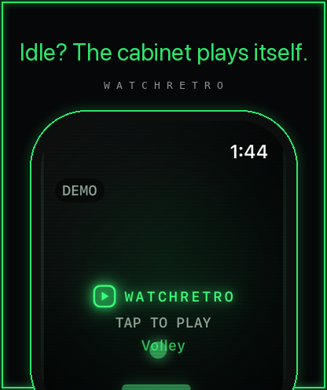
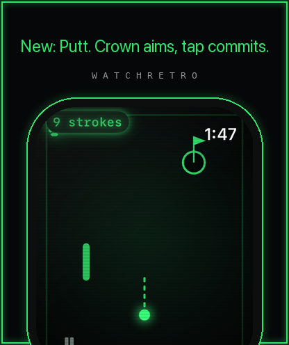
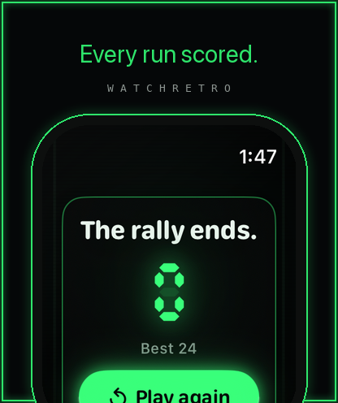
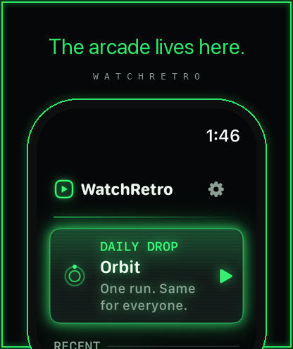
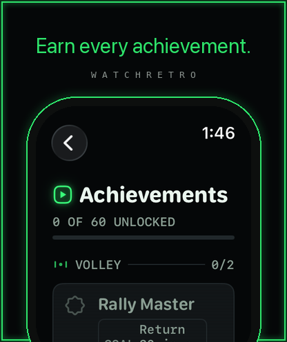
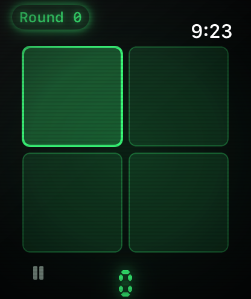
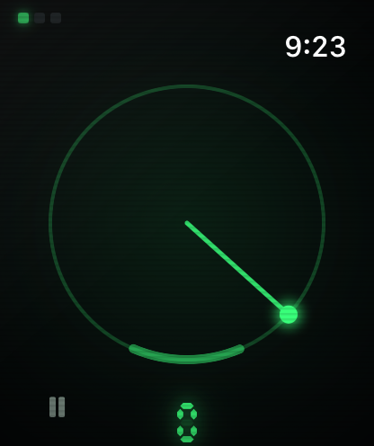
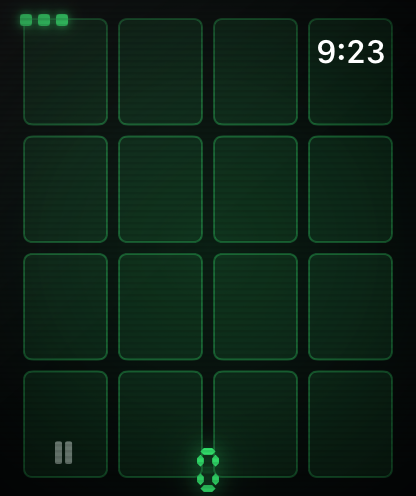
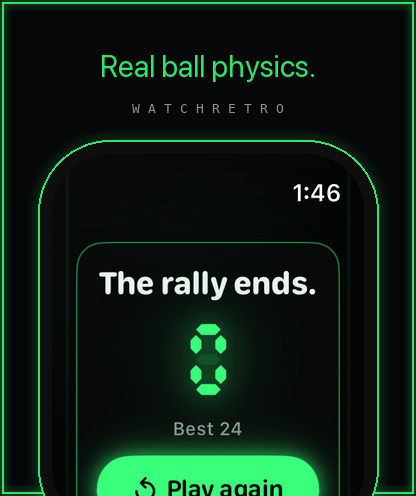

Press & editorial material — thirty hand-built arcade games, made only for the wrist.
watchOS-native Fully offline No ads · No IAP · No account 9 languages
WatchRetro treats the Apple Watch as a real game platform, not a second screen: the Digital Crown is the joystick, a run lasts under a minute, and every game answers in synced haptics and chiptune synthesized in code. One phosphor accent on true OLED black — the screen is the cabinet, and the game glows out of the dark. Everything below is shipping today on the App Store (WatchRetro: Watch Games Arcade).
Real arcade cabinets never sit still, so neither does this one. Attract Mode: leave the picker idle and the games begin demoing themselves — the actual engines driven by little autopilots, never canned video — until a tap drops you into the demoed game, exactly like stepping up to a machine mid-loop. Ghost Replay: every best run leaves a ghost; the next run races its recorded pace live on the HUD. The cabinet remembers you, and it plays back.



Every day, one game and one deterministic seed, the same for every player on Earth, rolled at local midnight from a pinned hash of the date. No server, no account — pure math. Play it and your streak extends; the complication and Smart Stack nudge an unplayed day. It is a daily ritual designed for the wrist: raise, run, done — the arcade's answer to the crossword.


Three of the thirty games — Echo, Pulse, and Pairs — are genuinely playable by blind players with VoiceOver: spoken pad playback and Crown-selection announcements in Echo, an assistive timing click the instant the hand enters a live arc in Pulse, and an accessibility grid whose activations flow through the real game shell in Pairs. Not menu-navigable — playable. Beyond the trio: WCAG-AA contrast everywhere, Reduce Motion honored (including never auto-starting Attract Mode), Dynamic Type to AX5, and haptic vocabularies distinct per event so the wrist alone tells the story.



WatchRetro makes zero network calls. No ads, no IAP, no account, no analytics — the privacy label is simply “Data Not Collected.” Put the watch in Airplane Mode over the Atlantic and all thirty games, scores, achievements, ghosts, and the Daily Drop keep working, because everything is computed and stored on the wrist. For travel collections: it is the game that works in seat 32F with the phone in the overhead bin.
